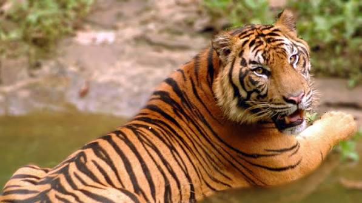

Harimau tiongkok selatan atau harimau tiongkok (bahasa Latin: Panthera tigris amoyensis) adalah subspesies harimau yang berasal dari hutan Tiongkok Selatan. Harimau tiongkok selatan merupakan spesies paling kritis dari semua subspesies harimau. Ahli menyatakan bahwa kini hanya tersisa kurang dari 20 harimau,
Baca Selengkapnya